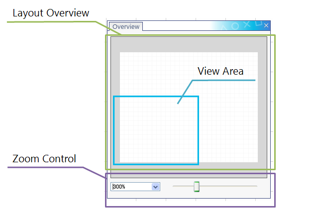
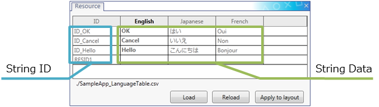
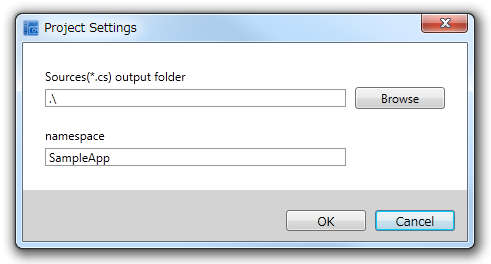

The UI Composer is a tool for configuring the layout of the GUIs of applications (such as windows and menus) running on PlayStation(R)Mobile (PSM).
GUIs can be intuitively laid out by dragging and dropping widgets, images, and other objects.
In addition, the position, size, and properties for each object can be set.
This chapter describes the configuration of the UI Composer and the role and function of each window.
Contents
The UI Composer manages multiple screens as one project file (xxxxx.uic). This file saves the layout information of each screen, the folder settings of the class output destination, and the information of the namespace to which the class belongs. The file configuration when an application is implemented using the UI Composer is shown below.:
SampleApp/ SampleApp.csproj SampleApp.uic. : UI Composer project file SampleApp_LanguageTable.csv : Character string data storage file (for user editing) AppMain.cs : Main logic of the application SampleA.cs : User-defined class A SampleB.cs : User-defined class B SampleC.cs : User-defined class C SampleScene.cs : File defining the logic and event handler of SampleScene (output by the UI Composer) SampleScene.composer.cs : File defining the layout information of SampleScene (output by the UI Composer) SamplePanel.cs : File defining the logic and event handler of SamplePanel (output by the UI Composer) SamplePanel.composer.cs : File defining the layout information of SamplePanel (output by the UI Composer) SampleDialog.cs : File defining the logic and event handler of SampleDialog (output by the UI Composer) SampleDialog.composer.cs : File defining the layout information of SampleDialog (output by the UI Composer) UIStringTable.cs : String management class (output by the UI Composer) assets/ : Asset folder referenced by the UI Composer AAA.png BBB.png
The UI Composer is composed of several windows (Figure 1, Table 1). The window tabs can be dragged to dock or undock the windows. The configuration of each window is described below in order.

Figure 1 Tool Overview
Table 1. List of Each Window Name Content Main Menu The main menu. Toolbar Button group of frequently used features. Layout Window This is a window to lay out widgets. Widget List Window Widgets that can placed on the layout canvas are displayed. Property Window Property settings of each widget are displayed. Object Tree Window Widgets placed on the layout canvas are displayed in a tree format. Asset Window Image assets in the asset directory are displayed. Overview Window Displays an overview of the layout canvas. Language Table Window Used when creating a GUI supporting multiple languages.
The layout window is a window used to position widgets on the layout canvas and configure the application screen. Widgets added by dragging and dropping from the widget list window (explained later) can be positioned as desired.
The layout window is configured as follows (Figure 2, Table 2).

Figure 2 Layout Window Overview
Table 2 Layout Window Explanation Name Description Guide Guide lines used to align the position of a widget. Guide lines can be set as desired. Smart Guide Guide lines used to align a widget with a widget positioned on the layout canvas as a reference point. Grid Grid lines displayed on the canvas. The layout window can be used to edit and operate the widget layout.
When a widget is selected, the resize handle is displayed (Figure 3). Drag the resize handle to change the size of the widget.

Figure 3 Widget Selection
Also, when selecting a widget and adjusting its position, the widget can be attached to a guide or to the smart guide (Figure 4).

Figure 4 Attaching to Guide Lines
As functions for aligning the layout, the tool bar and other parts have functions, such as to align the position of widgets horizontally or vertically and to distribute them evenly.
For a detailed description, refer to UI Composer User Guide - Layout Guide.
The widget list window displays the widgets that can be positioned on the layout canvas. Drag and drop widgets from this window to create a screen.
The PSM UI Toolkit provides a variety of widgets. Widgets that can be laid out using the UI Composer are displayed in this widget list window (Figure 5).
Select a widget on the widget list window and drag and drop the widget to the layout canvas to position the selected widget.

Figure 5 Widget List Window
Widgets are grouped and displayed by the following types.
- Common widgets (general widgets, such as buttons and labels)
- Panel widgets (widgets that store common widgets)
- PSM original widgets (widgets proprietary to the PSM UI Toolkit)
- All widgets (displays all of the above widgets)
For a list of widgets and their details, refer to the UI Toolkit Programming Guide - Widgets.
The property window displays those properties that can be set for all widgets and those properties that can be set for specific widgets, separately (Figure 6).
When a setting is changed on the property window, the change is applied to the widget display on the layout canvas. For some settings, however, the property may not be applied to the layout canvas.

Figure 6 Property Window
For details of the setting items of each widget, refer to UI Composer User Guide - Widgets.
The object tree window is a window that displays a tree of the widgets that exist in a project for each layout screen (Figure 7, Table 3).
This window provides an overview of the relationship of the widgets within each layout screen and enables editing of the structure within the tree and switching of displays.

Figure 7 Object Tree Window
Table 3 Object Tree Window Explanation Name Description Layout Screen The layout class names in the project will be displayed. Widget The variable names of widgets placed in each layout will be displayed. Visible Icon This represents whether the widget is displayed on the layout canvas or not. This setting can be toggled by clicking on the icon.
: Show
- : Hide
: Hide parent widget
Lock Icon This represents whether the widget can be selected on the layout canvas or not. This setting can be toggled by clicking on the icon.
- : Locked
: Unlocked
The order within the tree supports the Z-order, and the widgets at the lower end are displayed toward the front of the layout screen.
Drag and drop widgets in the object tree to change the Z-order and the parent-child relationship. In addition, the context menu can be used to copy, cut, paste, and delete widgets.
The visible icon differs from "Visible" of the property window in that there is no impact on the output code.
The asset window displays image data saved in the asset folder (Figure 8).

Figure 8 Asset Window
This window references (folder with project files)/assets. Therefore, even if an asset is added from the operating system to below (folder with project files)/assets, it is applied to the asset list display.
The supported image formats are .jpg and .png.
The asset window is composed of the three displays of table 4.
Table 4 Asset Window Explanation Name Description Preview of image data Preview display of the selected image data. Adjust the separator between the preview and the list to change the size of the preview image. List of image data References the asset folder specified with the project settings and displays the image data of the folder in a tree format. Various operation buttons Buttons for adding and deleting images and folders to and from the asset folder. Normally, when an Image Box is added to the layout screen, it is taken from the widget list window and positioned on the layout canvas, and the desired image is set to the Image property. The asset list window can be used to simplify this series of operations. By dragging and dropping image data directly from the image data list to the layout canvas, the Image Box assigned to the image selected in the Image property can be added to the layout screen.
The overview window displays an overview of the entire layout canvas.
This layout window can be used to control the zoom ratio of the layout canvas of the layout window and change the area displayed on the layout canvas.
The overview window is composed of the following two elements (Figure 9).
- Overview of the layout canvas
- Zoom ratio control
Figure 9 Overview Window
The area displayed in the layout window (View Area) is indicated with a blue line in the overview of the layout canvas. The view area of the layout canvas can be changed by clicking or dragging the overview.
To change the zoom ratio, use the drop-down list to select a preset value or the slider to select a user-defined zoom ratio. The zoom ratio can also be entered directly into the drop-down list.
This window is used to manage character strings for displaying various character strings used in developing applications that support other languages.
The language table window is used to set multiple character strings for use in an application.
By default, English character strings can be set. Other languages can also be added on and set.
The language table window is composed of the following two elements (Figure 10).
- Language Table
- Buttons
Each language is displayed in a row, and a character string ID is displayed in each column. The character string for each language corresponding to the character string ID is displayed in the cell corresponding to the row and column.
Figure 10 Language Table Window
The language table can be used to enter and edit a character string ID and the character string corresponding to that character string ID. The character string ID and the character string to be displayed, as well as the corresponding language, can be added or deleted. Reading and writing of csv files are also supported.
For details, refer to UI Composer User Guide - Multilingual Application Support.
Although all operations can be performed using the menus, the tool bar features the most commonly used functions.
The tool bar enables quick use of operations. The tool bar functions are described in Table 5.
Table 5 Toolbar Explanation Icon Name Description 
Arrow Cursor Use the cursor tool to enlarge, reduce, or move widgets 
HandModeButton Use the hand tool to move the canvas Save Saves the layout result to an UI Composer project file Open Opens an existing UI Composer project file 
New Creates a new Layout Cut Cuts the widget on the canvas 
Copy Copies the widget on the canvas 
Paste Pastes the copied widget 
Undo Undoes the last operation on the canvas Redo Does again the last undone operation on the canvas 
Align Left Aligns two or more selected widgets to the left Align Center (Horizontal) Aligns two or more selected widgets to the horizontal center Align Right Aligns two or more selected widgets to the right 
Align Top Aligns two or more selected widgets to the top Align Center (Vertical) Aligns two or more selected widgets to the vertical center Align Bottom Aligns two or more selected widgets to the bottom Align Horizontal Center in Container Aligns a widget to the horizontal center of a parent widget 
Align Vertical Center in Container Aligns a widget to the vertical center of a parent widget 
Make Same Width Makes two or more widgets have the same width Make Same Height Makes two or more widgets have the same height 
Make Same Size Makes two or more widgets have the same size Make Horizontal Space Equal Makes the horizontal space between three or more widgets equal Make Vertical Space Equal Makes the vertical space between three or more widgets equal Send to Back Sends the widget to the back most layer 
Send to Front Sends the widget to the front most layer 
Send Backward Sends the widget back one layer 
Send Forward Sends the widget front one layer
This application has a project settings window and a tool preferences window.
The items that can be set with these windows are described below.
From the main menu, select [File] - [Project Settings] to set the project environment (Figure 11, Table 6).
Figure 11 Project Property
Table 6 Project Setting Explanation Setting Item Description Sources output folder Specifies the folder to which the source file created upon build will be output. namespace Specifies namespace to which the output class belongs.
From the main menu, select [File] - [Preferences] to set the tool preferences (Figure 12, Table 7).

Figure 12 Tool Preferences
Figure 7 Tool Preferences Explanation Setting Item Description Guideline color Color of the guide lines that can be set at a user-specified location. Smart guideline color Color of the smart guide displayed automatically when a widget is dragged and dropped, for example. Grid line color Color of the grid lines displayed evenly on the layout canvas. Space between grid lines Specify the space between grid lines. Layout canvas background color Sets the layout canvas background color. Displays the layout canvas boundary lines Sets whether or not the layout canvas boundary lines are displayed. UI display language Sets the language for the UI display text in UIComposer.